SEO-Fallstudiekritisch bewertet
150.732 Besuche – was steckt dahinter?
Wie ein Drohnen-Ratgeber auf Platz 1 bei Google kam: die Fallstudie auf dem Blog von Robbie Richards über UAV Coach
- Von
- Yannick Heisler
- Modul
- Management im KMU
- Dozentin
- Prof. Dr. Christine Arend-Fuchs
Erst vorstellen, dann prüfen, dann auf KMU übertragen
- 1
Vorstellung
Fall, Zahlen, sechs Schritte
- 2
Bewertung
sechs Prüffragen
- 3
KMU
was sich übertragen lässt
- 4
Fazit
und Diskussion
Belegt die Fallstudie, was sie verspricht – und lohnt sich der Weg für ein KMU?
SEO heißt: unbezahlt oben stehen, wenn Kunden suchen
- Keywordder Suchbegriff
- SuchvolumenSuchen pro Monat
- BacklinkLink einer fremden Seite, wirkt wie eine Empfehlung
- Featured SnippetAntwortbox über Platz 1
Ein Drohnen-Ratgeber soll Kunden für eine Online-Drohnenschule gewinnen
- UAV CoachOnline-Kurse für Drohnenpiloten, USA
- Michael Karpbeauftragter Berater, schreibt den Ratgeber
- Robbie RichardsSEO-Berater, veröffentlicht die Fallstudie
- ZielReichweite, E-Mail-Adressen, Kunden
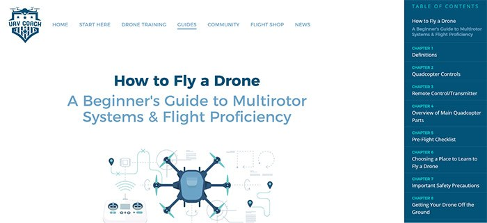
Die Fallstudie verspricht Platz 1 – ohne Werbebudget
- 150.732Besuche laut Titel
- +11.065 %organischer Traffic in 6 Monaten
- Platz 1vor Mashable, nach 5 Monaten
- 1.331Keywords mit einem Artikel
- 2.335E-Mail-Adressen gesammelt
- 5:22Minuten Verweildauer im Schnitt
1
Die Methode
Sechs Schritte von der Keyword-Recherche zum Backlink
Sechs Schritte: finden, bauen, Kontakte sammeln, verbreiten
- 1
Keywords
Themen und Konkurrenz prüfen
- 2
Inhalt
besten Artikel schreiben
- 3
On-Page
Seite selbst optimieren
- 4
Leads
E-Mail-Adressen sammeln
- 5
Promotion
Artikel aktiv verbreiten
- 6
Backlinks
Empfehlungen aufbauen
Nicht das Hauptkeyword zählt, sondern die vielen kleinen
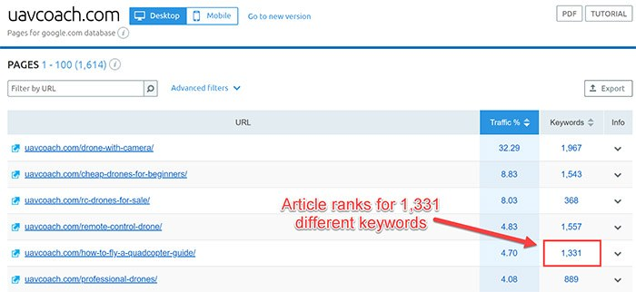
Werkzeuge: SEMrush, Keywords Everywhere, AnswerThePublic, „Nutzer fragen auch“
Vorher prüfen, ob man überhaupt gewinnen kann
- AutoritätWie viele Backlinks haben die Top 10?
- InhaltstypRatgeber, Produktseite oder Video?
- On-PageSteht das Keyword im Titel?
- QualitätWie gründlich und aktuell?
„interactive infographic“: organische Besuche in 12 Monaten
- Produktseite366
- Ratgeber-Liste9.565
Google zeigte nur Listen-Artikel – die Produktseite hatte keine Chance.
Den besten Artikel zum Thema schreiben – länger, aktueller, übersichtlicher
Länge in Wörtern
- bisher Platz 1303
- Ø Seite 1 laut Studie≈ 2.000
- UAV Coach4.774
- 3 TageRecherche und Schreiben
- 17Kapitel mit Sprungmarken
- + VideoBilder, Checkliste
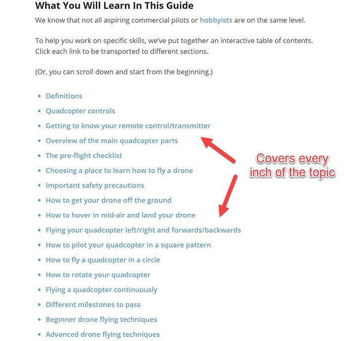
Google und Leser sollen sofort sehen, worum es geht
Aus Lesern werden E-Mail-Kontakte
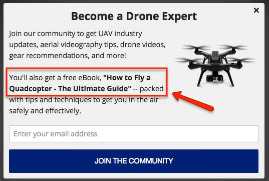
Den Artikel dorthin tragen, wo die Zielgruppe schon ist
Quora
Fragen beantworten, Link ans Ende. 1–2 Stunden täglich in Woche 1
Foren
mitdiskutieren, Link in der Signatur
Social Media
17 Kapitel = 17 einzelne Posts
Scoop.it
Kuratoren-Seiten vorschlagen, 7 pro Tag
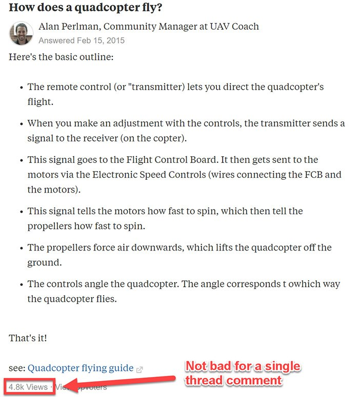
↓ über 4.800 AufrufeBacklinks entscheiden über Platz 1
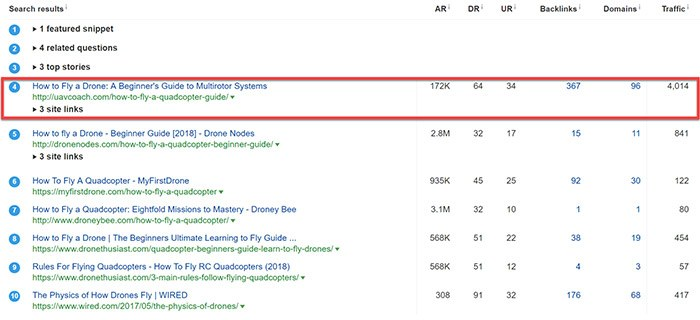
Mehr verweisende Domains als jeder Konkurrent auf Seite 1
Nach fünf Monaten auf Platz 1 – laut Fallstudie
2
Kritische Bewertung
Sechs Prüffragen an die Fallstudie
Sechs Fragen, die man jeder Fallstudie stellen sollte
Stimmen die Zahlen?
Konsistenz
Ist die Ursache belegt?
Kausalität
Wer verdient daran?
Unabhängigkeit
Gilt das noch?
Aktualität
Rechnet es sich?
Wirtschaftlichkeit
Ist es nachvollziehbar?
Dokumentation
Die Zahlen passen nicht zusammen – schon zwischen Titel und Text
| Angabe | Fallstudie sagt | an anderer Stelle |
|---|---|---|
| Besuche | 150.732im Titel | 152.732in der Einleitung |
| Zeitraum | 6 und 18 Monateim Text | 9 Monateim Screenshot, Feb.–Nov. 2015 |
| Wachstum | +11.065 %im Text (6 Monate) | +12.134,74 %im Screenshot (9 Monate) |
| Länge | 4.400 Wörterin der Einleitung | 4.774 Wörterin Schritt 2 |
| Suchvolumen | 720bei der Auswahl 2015 | 260im Screenshot von 2018 |
| Linkaufbau | „ohne Geld“in der Einleitung | 90 Tagebezahlter Berater, Schritt 6 |
Der Hauptbeleg startet bei fast null
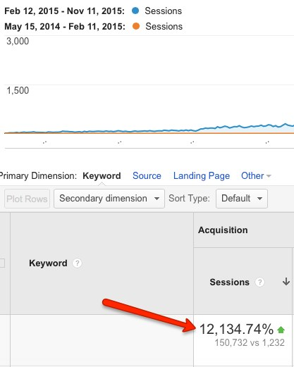
- Mai 2014–Feb. 20151.232
- Feb.–Nov. 2015150.732
Vorher: rund 137 Besuche im Monat über die Suche. Bei so kleiner Basis wirkt jedes Wachstum riesig.
Ein Einzelfall ohne Vergleich beweist keine Ursache
Gezeigt wird der Gewinner. Wie viele Artikel blieben auf Seite 5?
- n = 1ein Artikel, eine Nische, ein Zeitraum
- Keine VergleichsgruppeWelcher Schritt hat gewirkt?
- Korrelation ≠ KausalitätRanking-Studien zeigen Zusammenhänge
„Vor Mashable“ – aber welcher Treffer, bleibt offen
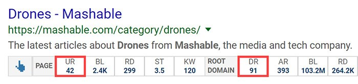
eine Kategorie-Seite – kein Ratgeber zur Frage
„The competition in this area was pretty weak.“
Michael Karp über die Linkwerte der Konkurrenz, Schritt 1
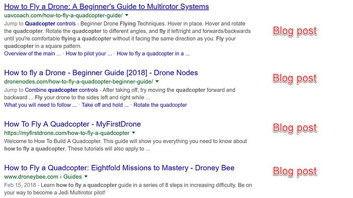
Die Fallstudie ist auch Werbung – für Tools, Kurs und Beratung
- 15Links mit Partnerkennung zu SEMrush, Ahrefs, Sumo, Thrive, ConvertKit
- 15Einschübe des Herausgebers („Editor’s note“)
- 5Links auf den eigenen Kurs „The SEO Playbook“
- 2Angebote zur Beratung
Offengelegt und legal – aber ein Verkaufsargument, kein neutraler Beleg.
Die Daten stammen von 2015 – die Suche hat sich seitdem verändert
- ohne KI-Übersicht15 %
- mit KI-Übersicht8 %
Anteil der Aufrufe einer Google-Suchseite, nach denen auf ein normales Ergebnis geklickt wird (Pew Research Center, USA, März 2025)
Den Aufwand kennt man teilweise, den Ertrag gar nicht
Was trägt: die Methode ist plausibel und gut dokumentiert
Suchintention zuerst
Inhaltstyp der Top 10 prüfen – heute Standard
Ein Thema gründlich
statt zehn dünner Artikel
Kontakte statt Klicks
Traffic wird in Leads übersetzt
Nachvollziehbar
über 100 Screenshots, Vorlagen, Mustermails
Gesamturteil: gutes Handwerk, schwache Beweisführung
- KonsistenzschwachZahlen widersprechen sich
- KausalitätschwachEinzelfall, kein Vergleich, Basiseffekt
- UnabhängigkeitschwachProvisionen, Kurs, Beratung
- AktualitätteilsPrinzip gilt, Taktiken und Klickzahlen veraltet
- Wirtschaftlichkeitschwachkeine Kosten, kein Umsatz
- DokumentationgutVorgehen nachvollziehbar, Ergebnisse nicht prüfbar
3
Was heißt das für KMU?
Behalten, anpassen, streichen
Für KMU passt das Prinzip – nicht jede Taktik
Behalten
- Nische statt MasseFachwissen schlägt Budget
- Suchintention prüfenvor dem Schreiben
- Kontakte sammelnmit nachweisbarer Einwilligung
Anpassen
- Anfragen messennicht Besuche
- 3–6 Monate Anlauffest einplanen
- Lokal denkenUnternehmensprofil, Region
Streichen
- Wortzahl als ZielAntwort zählt, nicht Länge
- Forensignaturen, Scoop.itkaum Wirkung
- Pop-up nach 12 sstört beim Lesen
Beispiel: ein Heizungsbauer mit zwölf Beschäftigten
- 1
Keyword
„Wärmepumpe im Altbau“ + Kundenfragen
- 2
Ratgeber
eigene Fotos, echte Kosten, Erfahrungen
- 3
Technik
Ort im Titel, Unternehmensprofil
- 4
Lead
Förder-Checkliste als PDF, dann Beratung
- 5
Verbreiten
Newsletter, Kundengespräch, Lokalzeitung
- 6
Links
Innung, Hersteller, Verein, Kammer
Erfolg = Beratungstermine pro Monat, nicht Besuche.
Fazit: Die Methode taugt – der Beweis nicht
- 1
Solides Handwerk
Die sechs Schritte passen gut zu KMU mit Nischenwissen.
- 2
Schwacher Beleg
Widersprüche, Einzelfall, eigene Verkaufsinteressen.
- 3
Anders messen
Anfragen und Umsatz zählen – mit KI-Antworten gibt es weniger Klicks.
Diskussion
Würden Sie einem KMU raten, 2026 noch in Ratgeber-Artikel zu investieren?
Wie viel Vertrauen verdient eine Fallstudie von jemandem, der daran verdient?
Welche Zahl hätten Sie statt „Besuche“ veröffentlicht?
Quellen
- Richards, R.; Karp, M. (2015/2020): SEO Case Study: 6-Step Process That Generated 150,732 Visits. robbierichards.com/seo/case-study (erschienen Nov. 2015, neu datiert 02.08.2020, zuletzt geändert 22.11.2022; Abruf 05.11.2026). Alle Screenshots auf den Folien stammen aus dieser Fallstudie und werden als Beleg zitiert (§ 51 UrhG, Quellenangabe nach § 63 UrhG).
- UAV Coach (2024): How to Fly a Drone: A Beginner’s Guide to Multirotor Systems. uavcoach.com/how-to-fly-a-quadcopter-guide (datiert 02.05.2024, geändert 22.10.2026; Abruf 05.11.2026).
- Pew Research Center (2025): Google users are less likely to click on links when an AI summary appears in the results. Short Read, 22.07.2025.
- Google Search Central (2022): What creators should know about Google’s August 2022 helpful content update. Blog, 18.08.2022.
- Google (2024/2025): KI-Übersichten (AI Overviews) in den USA ab 14.05.2024; „Übersicht mit KI startet in Deutschland und weiteren Ländern“, Google-Blog, 26.03.2025.
- Mueller, J. (2019): „There’s no such thing as LSI keywords“. Beitrag auf Twitter (heute X), 30.07.2019; berichtet von Search Engine Roundtable.
- Google/DoubleClick (2016): The Need for Mobile Speed. Google-Blog, Sept. 2016 (53 % der mobilen Besuche werden bei mehr als 3 s Ladezeit abgebrochen); zitiert in der Fallstudie.
- Backlinko (2025): Google Click-Through Rate Statistics (Klickrate des ersten organischen Treffers 27,6 %).
- Yin, R. K. (2018): Case Study Research and Applications. Design and Methods. 6. Aufl., Thousand Oaks, CA: SAGE.
- UWG § 7 Abs. 2 Nr. 2; DSGVO Art. 7 Abs. 1: Einwilligung in Werbe-E-Mails und Nachweispflicht.
Belege zu den Widersprüchen
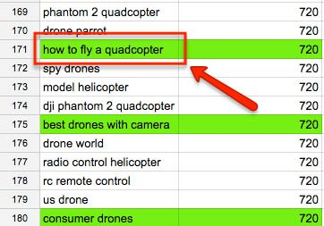
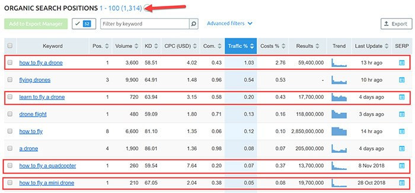